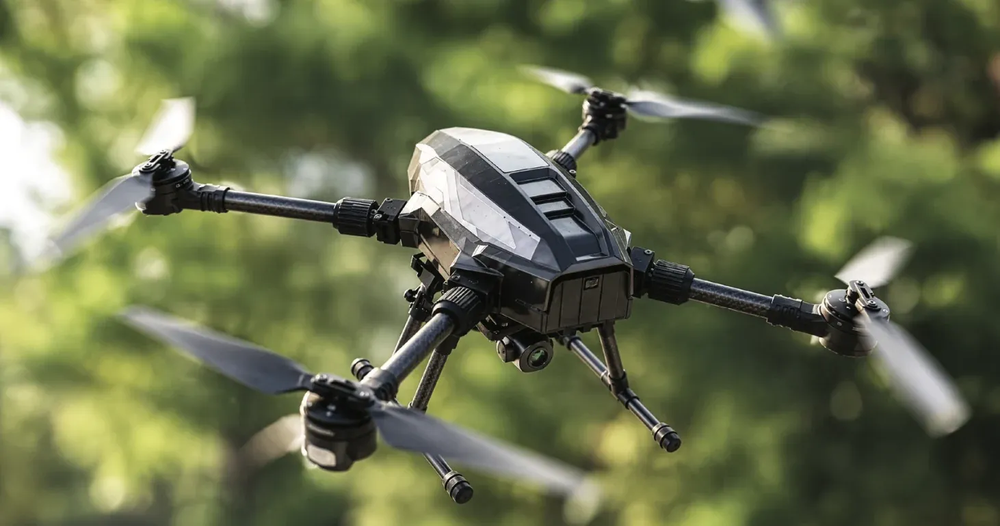
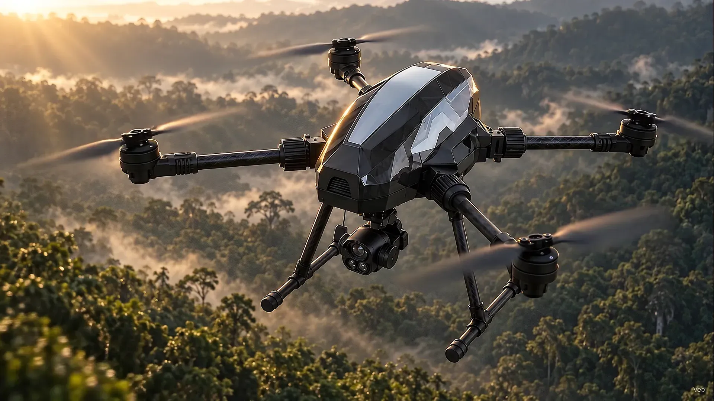

01 / OVERVIEW
Carbon MRV multirotor
5kg
Payload capacity
DECARB 54 flies low and follows the terrain. It supports carbon MRV work on small and medium sites where a fixed-wing UAV is not practical.
Carbon MRV multirotor

01 / OVERVIEW
5kg
Payload capacity
DECARB 54 flies low and follows the terrain. It supports carbon MRV work on small and medium sites where a fixed-wing UAV is not practical.
02 / COVERAGE
~50ha
03 / ENDURANCE
60min
04 / APPLICATIONS
05 / TECHNOLOGY
3D view of the CT UAV 3D design model. Colours and small parts can be different on the delivered UAV.
06 / SPECIFICATIONS
DECARB 54
| Max take-off weight | 11.4 kg |
|---|---|
| Payload capacity | 5 kg |
| Hovering time | 60 minutes |
| Range | 200 km |
| Coverage per flight | ~50 ha (mapping) |
| Mapping productivity | ~200–250 ha/day |
| Multispectral productivity | ~160–200 ha/day |
| RTK accuracy | cm-level (1–3 cm) |
07 / GALLERY

CT UAV / DECARB 54
Ask CT UAV about DECARB 54 and carbon MRV applications.
Contact page planned for the full website.